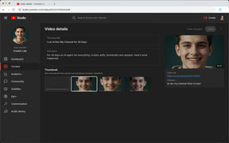
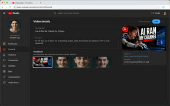
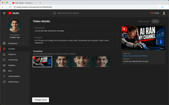

Thumbnails for my latest video
Search⌘K
Make a thumbnail for my latest video, one from each: Nano Banana 2, GPT Image 2 and FLUX.2
Switched to FLUX.2
FLUX.2in superbot
Here are three takes on your thumbnail.
Nano Banana 2 and GPT Image 2 ran on your Google and ChatGPT plans; FLUX.2 used Superbot credits.
Created3 images
18sDownload all


Ok, use this one and upload it to my channel's latest video
Thinking
- Opening Google ChromeOpened Google Chromecame forward
- Clicked in Google Chrometook cursor

- Clicked in Google Chrometook cursor

- Took a screenshot of Google Chrome

Uploaded.
Your new thumbnail is live on “I Let AI Run My Channel for 30 Days”.
How can superbot help you today?
Auto
Agent
superbot